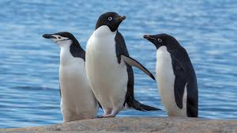

Overview
The Chinstrap Penguin (Pygoscelis antarcticus) is easily recognizable by the narrow black band under its head, which gives it the appearance of wearing a helmet strap. It is one of the most abundant penguin species.
Key Facts
- Height: Around 68–76 cm (27–30 inches).
- Weight: 3 to 5 kg (6.6 to 11 pounds).
- Diet: Primarily krill, with some fish and squid.
- Habitat: Antarctic Peninsula and sub-Antarctic islands.
Behavior and Nesting
Chinstrap Penguins are highly social and often form large colonies. They are excellent climbers, often nesting on steep rocky slopes. Their loud calls are used to communicate within the colony.